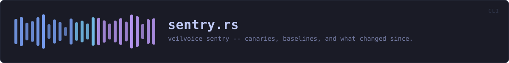

crates/veilvoice-cli/src/sentry.rs
veilvoice-cli · 384 lines · read the source here · or on GitHub
veilvoice sentry -- canaries, baselines, and what changed since.
The command-line front end to veilvoice_sentry. All of the logic is in that crate; this file decides where the state lives, prints it, and chooses an exit code.
Where the state lives
Beside the app lock, under the platform's usual per-user configuration directory:
<config>/veilvoice/sentry/nest.txt the planted canaries
<config>/veilvoice/sentry/<16 hex>.txt one baseline per watched directoryBaselines are named from a digest of the directory they describe, so two directories cannot silently overwrite each other's baseline and the state directory's listing does not say what somebody is watching. Each file records its own root, so check reads them rather than needing an index.
The exit code answers one question and not the other
veilvoice sentry check exits non-zero when a canary tripped, because that is a fact: a file nothing uses was changed, moved or removed. It exits zero for churn at any level, however high, because churn is a question -- a backup restore produces the same numbers as anything else, and a command that fails a scheduled task every time somebody copies a folder is a command somebody removes from the scheduled task.
This detects, and stops nothing
veilvoice_sentry::SCOPE is printed by status rather than paraphrased here, so there is one wording and the tests guard it.
In plain words
The command line for the tripwires: the decoy files that should never change, and how much of a folder has changed since you last looked.
Both are early warnings and neither stops anything. What they buy is finding out quickly.
WHAT THIS FILE CONTAINS
384 lines defining 11 functions (7 public), 0 types and 0 constants. Everything below is read out of the source, so it cannot disagree with the code.
What happens when it runs. These are the ways in: public, and nothing else in this file calls them, so they are what an outside caller reaches first.
statusline 128 · What is planted, what is watched, and what this is worth.
reachesbaselines,load_nest,wrap,state_dir,nest_pathplantline 170 · Put a canary in dir.
reachesload_nest,save_nest,nest_path,state_dirpull_upline 194 · Stop watching a canary, and delete it.
reachesload_nest,save_nest,nest_path,state_dirbaselineline 205 · Record what dir holds now, as the thing to compare against later.
reachesstate_dircheckline 241 · Look at every canary and every baseline.
reachesbaselines,load_nest,state_dir,nest_path
WHAT CALLS WHAT
The functions this file defines, and the calls between them. An edge means the callee's name appears, called, inside the caller's body. This is a syntactic reading, not a type-resolved one.
The same graph as Mermaid source
%%{init: {"theme":"base","themeVariables":{"background":"#1a1b26","primaryColor":"#1f2335","primaryTextColor":"#c0caf5","primaryBorderColor":"#7aa2f7","secondaryColor":"#16161e","tertiaryColor":"#16161e","lineColor":"#737aa2","textColor":"#c0caf5","mainBkg":"#1f2335","nodeBorder":"#7aa2f7","clusterBkg":"#16161e","clusterBorder":"#2f3549","fontFamily":"ui-monospace, SFMono-Regular, Consolas, monospace","fontSize":"14px"}}}%%
flowchart TD
n_state_dir["state_dir<br/>line 54"]
n_nest_path["nest_path<br/>line 58"]
n_load_nest["load_nest<br/>line 74"]
n_save_nest["save_nest<br/>line 85"]
n_baselines["baselines<br/>line 92"]
n_status(["status<br/>line 128"])
n_plant(["plant<br/>line 170"])
n_pull_up(["pull_up<br/>line 194"])
n_baseline(["baseline<br/>line 205"])
n_check(["check<br/>line 241"])
n_wrap["wrap<br/>line 319"]
n_baseline --> n_state_dir
n_baselines --> n_state_dir
n_check --> n_baselines
n_check --> n_load_nest
n_load_nest --> n_nest_path
n_nest_path --> n_state_dir
n_plant --> n_load_nest
n_plant --> n_save_nest
n_pull_up --> n_load_nest
n_pull_up --> n_save_nest
n_save_nest --> n_nest_path
n_status --> n_baselines
n_status --> n_load_nest
n_status --> n_wrap
click n_state_dir href "https://github.com/tilas01/veilvoice/blob/main/crates/veilvoice-cli/src/sentry.rs#L54" "open the source"
click n_nest_path href "https://github.com/tilas01/veilvoice/blob/main/crates/veilvoice-cli/src/sentry.rs#L58" "open the source"
click n_load_nest href "https://github.com/tilas01/veilvoice/blob/main/crates/veilvoice-cli/src/sentry.rs#L74" "open the source"
click n_save_nest href "https://github.com/tilas01/veilvoice/blob/main/crates/veilvoice-cli/src/sentry.rs#L85" "open the source"
click n_baselines href "https://github.com/tilas01/veilvoice/blob/main/crates/veilvoice-cli/src/sentry.rs#L92" "open the source"
click n_status href "https://github.com/tilas01/veilvoice/blob/main/crates/veilvoice-cli/src/sentry.rs#L128" "open the source"
click n_plant href "https://github.com/tilas01/veilvoice/blob/main/crates/veilvoice-cli/src/sentry.rs#L170" "open the source"
click n_pull_up href "https://github.com/tilas01/veilvoice/blob/main/crates/veilvoice-cli/src/sentry.rs#L194" "open the source"
click n_baseline href "https://github.com/tilas01/veilvoice/blob/main/crates/veilvoice-cli/src/sentry.rs#L205" "open the source"
click n_check href "https://github.com/tilas01/veilvoice/blob/main/crates/veilvoice-cli/src/sentry.rs#L241" "open the source"
click n_wrap href "https://github.com/tilas01/veilvoice/blob/main/crates/veilvoice-cli/src/sentry.rs#L319" "open the source"
classDef entry fill:#1f2335,stroke:#7aa2f7,color:#c0caf5
class n_status,n_plant,n_pull_up,n_baseline,n_check entry
classDef api fill:#1f2335,stroke:#7dcfff,color:#c0caf5
class n_state_dir,n_wrap api
classDef helper fill:#1f2335,stroke:#bb9af7,color:#c0caf5
class n_nest_path,n_load_nest,n_save_nest,n_baselines helperThis site loads no third-party script, so it cannot run Mermaid; the diagram above is the same nodes and edges drawn by the generator instead. GitHub renders the source below directly.
ITEMS
| Item | Line | Documentation |
|---|---|---|
state_dir pub fn | 54 | Where the canaries and baselines are kept. |
nest_path fn | 58 | |
load_nest fn | 74 | Read the nest, treating "no file yet" as "nothing planted". |
save_nest fn | 85 | |
baselines fn | 92 | Every saved baseline, with the path it came from. |
status pub fn | 128 | What is planted, what is watched, and what this is worth. |
plant pub fn | 170 | Put a canary in dir. |
pull_up pub fn | 194 | Stop watching a canary, and delete it. |
baseline pub fn | 205 | Record what dir holds now, as the thing to compare against later. |
check pub fn | 241 | Look at every canary and every baseline. |
wrap pub fn | 319 | Wrap text to width columns on spaces, for the scope note. |